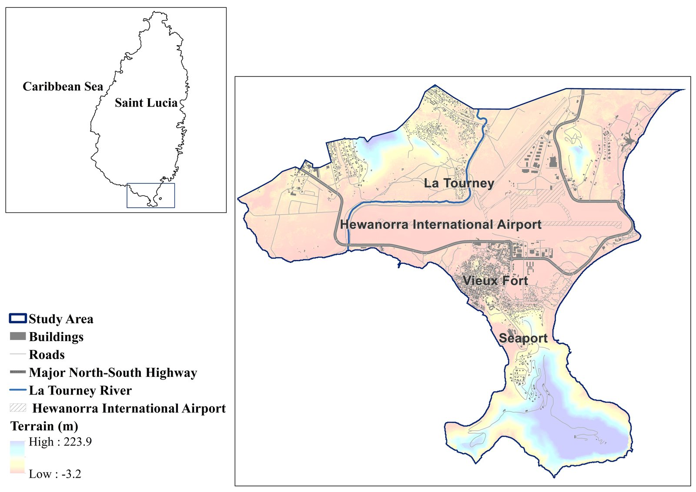
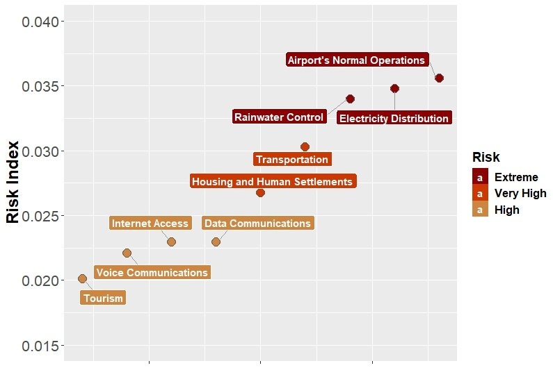
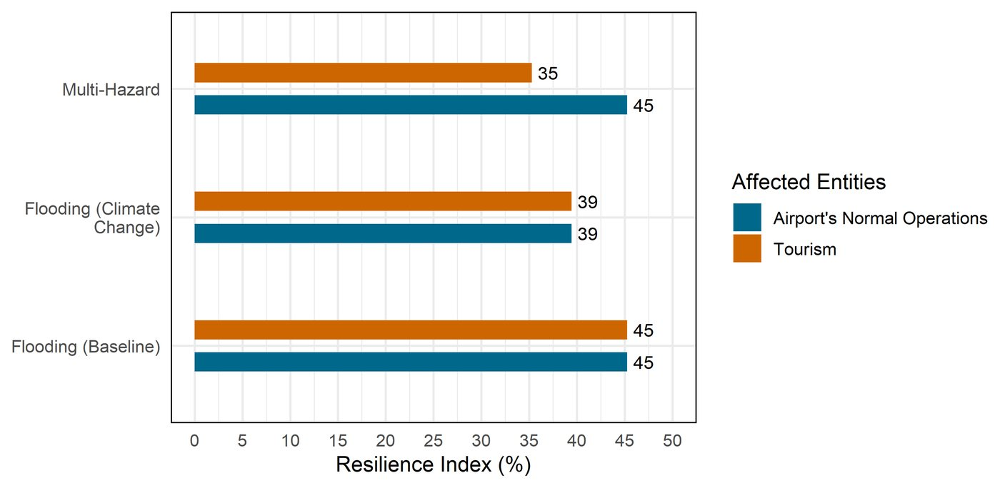
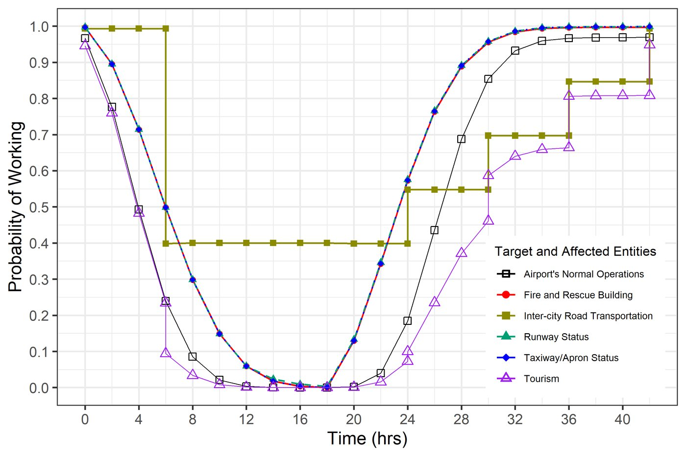

Projects / Case study
Saint Lucia, Eastern Caribbean, 2018 to 2025
One storm, one airport, a chain of failures
In September 2016 Tropical Storm Matthew brought rain, river flooding and waves to Saint Lucia at the same time. Over seven years and two theses we followed that water from the sky to the runway, and then modelled how disruption at the airport can spread to the roads and the tourism economy that depend on it.
Why Saint Lucia
A small island where everything is connected
Saint Lucia is one of the Caribbean Small Island Developing States. Its catchments are short and steep, rain records are brief, and the south coast concentrates the island's international airport, a seaport, a town and the main highway on low ground beside the sea. When Matthew passed, telephone and internet networks, roads, water supply and health facilities were all damaged.
That makes the island a clear natural laboratory for a question that matters everywhere, including in Canada: when several flood drivers arrive together, how far does the damage travel through the systems people rely on?

Chapter 1 · The hazard
Rebuilding a compound flood where data are scarce
There were few gauges and short records, so Ying (Katrina) Zhang built the flood probabilistically. A two-dimensional hydrodynamic model simulated pluvial, river and coastal flooding during Matthew together, including wave runup, and ran across many plausible inputs so that the uncertainty in the inputs is carried into the flood maps rather than hidden.
Flooding at the airport came from more than one direction at once: rain ponding on the airfield, the La Tourney River, and the sea. Treating any one driver alone understates the hazard.


Chapter 2 · The network
From flood maps to a map of dependencies
A flooded taxiway matters because of what depends on it. With RiskLogik, we mapped the island's infrastructure as a network of entities and the links between them, then used the Strongest Path Method to score each entity by how much it can disrupt others (global impact) and how exposed it is to failures elsewhere (global vulnerability). We compared non-flood and flood conditions and tested the rankings with a sensitivity analysis.
The ranking points to where flood mitigation buys the most: backup electricity generators, the runway and the taxiway and apron first, then transportation, electricity and information and communication services.

Chapter 3 · The dynamics
Failure has a timeline, and so does recovery
Soheil Bakhtiari's doctoral research turned the static network into a probabilistic, time-aware one. A Bayesian network first replaced fixed scores with failure probabilities that update as hazards strike (BN-SPM). A dynamic Bayesian network then followed each entity hour by hour, as flooding knocks facilities out and as they come back. The latest version adds four operating states per entity, fuzzy sets for expert judgement, and a second hazard: landslides cutting links between systems.
Hewanorra International Airport is the most vulnerable entity even before any hazard, because so much depends on it. Tourism recovers last: it waits for the airport and the roads.
In modelled scenarios from the newest work, tourism's resilience index (a model measure of how much function a system keeps and recovers) falls from 45 percent under baseline flooding to 39 percent with climate change and to 35 percent when landslides are added, while the climate change scenario also spreads impacts more widely across the island.



Interactive
Watch a failure cascade through the airport
Press play to step through the 42 hours of one modelled dynamic Bayesian network scenario, not a record of what happened during Matthew: the runway, taxiway and apron and the fire and rescue building flood, and six hours in the inter-city road is disrupted too. Bars show each entity's probability of working.
Values are read approximately from the published figure for this scenario (Bakhtiari, Najafi, Goda and Peerhossaini, Reliability Engineering and System Safety, 2025), in two-hour steps. The six airport services are not plotted in the paper; a dashed outline marks them as in the failure pathway while their supporting facilities are more likely down than up.
What it means
Lessons that travel
- Model the drivers together. Rain, river and sea flooding at one airfield have to be simulated jointly, with their uncertainty, before risk can be ranked.
- Rank by dependence, not only exposure. An entity can be lightly flooded and still be the one whose loss spreads furthest.
- Plan for the recovery curve. Hours matter: the gap between when facilities come back and when the economy does is where redundancy pays off.
- Expect a second hazard. Landslides on the same roads that recovery depends on cut resilience further than flooding alone.
The same questions now drive our coastal work in Canada, from compound flooding in Tofino to the CIRCLE living labs in Canada, Cuba and Indonesia, and our research with Western's Centre for Multihazard Risk and Resilience.

Outputs
Papers and milestones
Flood inundation modelling of Saint Lucia, report to Deep Logic Solutions; first results at the AGU Fall Meeting
Talks at the IUGG General Assembly, the Workshop on Correlated Extreme Events at Columbia University, the Natural Hazards Workshop in Colorado, and the Western and ICLR multihazard workshop
Probabilistic numerical modelling of compound flooding caused by Tropical Storm Matthew over a data-scarce coastal environment, Water Resources Research
A flood risk assessment framework for interdependent infrastructure systems in coastal environments, Sustainable Cities and Society
Dynamic Bayesian networks for impact propagation in Saint Lucia's infrastructure, AGU Fall Meeting
Integrated Bayesian network and strongest path method (BN-SPM) for effective multi-hazard risk assessment of interconnected infrastructure systems, Sustainable Cities and Society. Soheil Bakhtiari completes his PhD.
A dynamic Bayesian network approach to characterize multi-hazard risks and resilience in interconnected critical infrastructures, Reliability Engineering and System Safety
Multi-state fuzzy dynamic Bayesian network with auxiliary nodes for multi-hazard resilience assessment of interconnected infrastructure systems
People
Team and partners

Early flood modelling was carried out for Deep Logic Solutions. Infrastructure network analysis used the RiskLogik platform.